ダンジョン探索には必須。
個人的にはいりません。
個人的には分かりにくいのでいりません。
とある仕掛けを解除するのにも使います。
ゴールド/プラチナメダルを狙う場合、便利です。
つい熱中しすぎる方に・・・。
個人的にはいりません。
バックの絵柄が選べたら最高だったのですが。

個人的にはいりません。
個人的にはいりません。
目次 > ゲームについて > 日本Falcom 攻略 > ZWEI II > ガジェット一覧
らんの眼
ZWEI II (ツヴァイ 2、ZWEI II Plus)
| 概要 | 情報 | 攻略チャート |
| フード交換 | ペットについて | ボス戦 |
| 敵キャラ一覧 | ハンターランク | G-コロッセオ |
| アイテム一覧 | ガジェット一覧 | トレジャー一覧 |
| ダンジョン一覧 | クリアデータ特典 | Plusの追加要素 |
| ZWEI II攻略へ | 目次へ戻る |
| 名前 | 画像 | 価格 | 機能 | 入手方法 |
| ミニMAP | 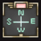 | ミニマップを表示してくれます。 ダンジョン探索には必須。 |
ミリアムに話しかける | |
| タイミングバー | 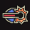 | 4800 | クリティカルの発生タイミングが分かります。 個人的にはいりません。 |
工房 <<ガレージ・ガシュレー>> で購入する |
| 盗賊の鼻 | 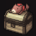 | 主人公が向いている方向に宝箱があるか教えてくれる。 個人的には分かりにくいのでいりません。 |
オルディウム神殿「祭壇への道(LV.5)」の宝箱 | |
| 体重計 | ガジェットを表示してフードを食べると、体重が増え、それにともないグラフィックも変化します。 とある仕掛けを解除するのにも使います。 |
純粋少年杯を制覇 | ||
| Z-POD | 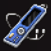 | 持っている音楽CD を再生できます。選曲や再生・停止がもっとやりやすければ便利なのですが・・・。 | 万能執事杯を制覇 | |
| スコアボード | 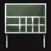 | 4800 | ダンジョンの壺の数や制限時間などが分かります。 ゴールド/プラチナメダルを狙う場合、便利です。 |
工房 <<ガレージ・ガシュレー>> で購入する |
| デジタル時計 | 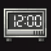 | 1800 | 現在の時間が分かります。 つい熱中しすぎる方に・・・。 |
工房 <<ガレージ・ガシュレー>> で購入する |
| ポータブルTV | 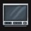 | 主人公や近くのキャラクターのアップが見られます。 | アウロン大鉄塔「軌道連絡駅(LV.10)」の宝箱 | |
| メールBOX | 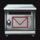 | 色々な文章が読めます。横書きだけとは限りません。 個人的にはいりません。 |
アウロン大鉄塔「基底区画(LV.9)」の宝箱 | |
| タイプゲーム | 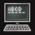 | タイピングゲームができます。見事入力できるとペンネがもらますが、個人的にはいりません。 | 星ヶ峰「吹雪ヶ原(LV.18)」の宝箱 | |
| スカウター | 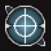 | 4800 | 敵のレベル、HP が表示されます。便利といえば便利ですが、いちいち見ている余裕がありません。 | 工房 <<ガレージ・ガシュレー>> で購入する |
| アナログ時計 | 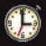 | 現在の時間が見られます。 バックの絵柄が選べたら最高だったのですが。 |
ルナ＝ムンドゥス[「月の回廊(LV.20)」にいる「わーらびっと」を倒す | |
| 万歩計 | |
歩いた歩数がカウントされます。たくさん歩くといいことがあります。 | オルディウム神殿「本殿区画(LV.4)」の宝箱 | |
| メモ帳 | 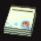 | 冒険の状況が表示されます。 個人的にはいりません。 |
セクンドゥム廃坑「始まりの坑道(LV.1)」の宝箱 | |
| 脳トレゲーム | 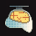 | 計算問題に正解するとコンボ数が1 増えます。 個人的にはいりません。 |
金闇の森「菜園林道(LV.7)」の宝箱 | |
| 名前 | 画像 | 価格 | 機能 | 入手方法 |
| 概要 | 情報 | 攻略チャート |
| フード交換 | ペットについて | ボス戦 |
| 敵キャラ一覧 | ハンターランク | G-コロッセオ |
| アイテム一覧 | ガジェット一覧 | トレジャー一覧 |
| ダンジョン一覧 | クリアデータ特典 | Plusの追加要素 |
| ページの上部へ | ZWEI II 攻略へ | 目次へ戻る |